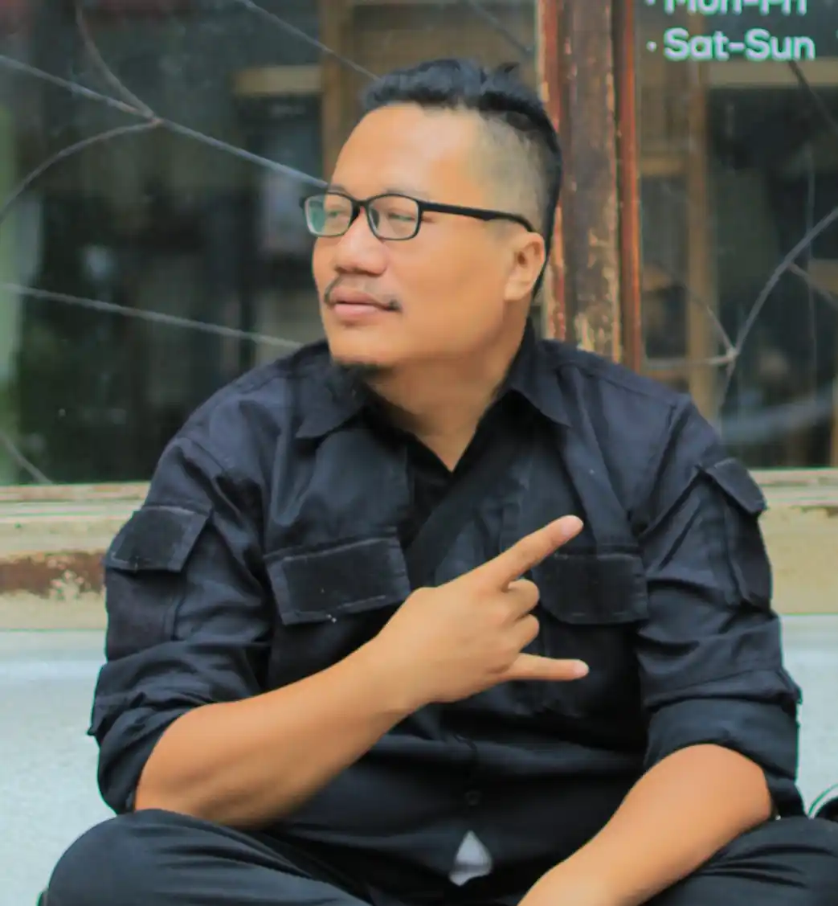

Creative Professional Spotlight
Saiful Halim, Fotografer dan Videografer Profesional dengan Spesialisasi Street Photography di Braga Bandung

Di tengah berkembangnya industri kreatif di Kota Bandung, nama Saiful Halim dikenal sebagai salah satu fotografer dan videografer profesional yang aktif menghasilkan karya visual berkualitas sejak tahun 2020. Berbasis di Bandung, ia membangun reputasinya melalui kemampuan mendokumentasikan berbagai momen dan kebutuhan visual, mulai dari kebutuhan personal hingga komersial.
Salah satu bidang yang paling melekat dengan identitas profesionalnya adalah street photography di kawasan Braga. Melalui layanan Jasa Street Photo Braga, Saiful Halim membantu klien mengabadikan momen dengan latar suasana ikonik jalanan Braga yang memiliki karakter historis, artistik, dan khas Kota Bandung.
Pendekatan fotografi yang natural serta pemanfaatan elemen jalanan sebagai bagian dari komposisi visual menjadi daya tarik tersendiri dalam setiap hasil karyanya.
Memiliki Sertifikasi Kompetensi Fotografi
Sebagai bentuk komitmen terhadap profesionalisme, Saiful Halim telah mengantongi sertifikasi resmi dari Leskofi-BNSP (Lembaga Sertifikasi Kompetensi Fotografi – Badan Nasional Sertifikasi Profesi).
Sertifikasi tersebut menunjukkan bahwa kompetensinya telah diuji dan diakui sesuai standar profesi fotografi yang berlaku.
Keahlian teknis yang dimiliki tidak hanya terbatas pada fotografi jalanan. Ia juga berpengalaman dalam mengerjakan berbagai proyek visual untuk kebutuhan brand, dokumentasi arsitektur dan interior, event perusahaan, komunitas, hingga produksi konten video yang mendukung kebutuhan promosi digital.
Berpengalaman Menangani Beragam Proyek Visual
Dalam perjalanan kariernya, Saiful Halim telah terlibat dalam berbagai jenis pekerjaan kreatif yang membutuhkan kemampuan observasi visual, penguasaan pencahayaan, serta storytelling melalui foto dan video.
Beberapa bidang yang menjadi fokus pengerjaannya meliputi:
- Fotografi dan videografi untuk kebutuhan brand dan bisnis
- Dokumentasi arsitektur dan interior
- Liputan event perusahaan dan organisasi
- Dokumentasi kegiatan komunitas
- Street photography personal maupun komersial
- Produksi konten video promosi
Fleksibilitas tersebut membuat jasanya dapat digunakan oleh individu, pelaku usaha, organisasi, maupun komunitas yang membutuhkan dokumentasi visual profesional.
Pendiri Komunitas N2SP
Selain aktif sebagai fotografer profesional, Saiful Halim juga dikenal sebagai pendiri komunitas N2SP (@info_n2sp), sebuah komunitas fotografer dan model organik yang berbasis di Bandung.
Komunitas ini menjadi wadah bagi para pegiat fotografi untuk belajar, berbagi pengalaman, memperluas jaringan kreatif, serta meningkatkan kemampuan teknis melalui aktivitas kolaboratif.
Berbagai kegiatan hunting foto bersama secara rutin dilaksanakan di berbagai lokasi menarik di Kota Bandung dan sekitarnya sehingga memberikan kontribusi terhadap perkembangan ekosistem fotografi lokal.
Focus Project sebagai Platform Layanan Profesional
Untuk mengelola layanan fotografi dan videografi secara profesional, Saiful Halim menjalankan bisnis kreatif bernama Focus Project.
Melalui platform ini, calon klien dapat melihat portofolio hasil karya, memperoleh informasi layanan, serta melakukan konsultasi terkait kebutuhan pemotretan maupun produksi video.
Area operasional utamanya mencakup kawasan Braga dan wilayah Bandung sekitarnya sehingga menjadi pilihan bagi wisatawan, pasangan, individu, maupun pelaku usaha yang ingin mendapatkan dokumentasi visual dengan nuansa khas Kota Bandung.
Fokus Layanan yang Ditawarkan
- Jasa Street Photography Braga Bandung
- Fotografi Personal dan Portrait
- Dokumentasi Event dan Gathering
- Fotografi Brand dan Bisnis
- Fotografi Arsitektur dan Interior
- Produksi Konten Video
- Videografi Promosi dan Dokumentasi
Street Photography Braga sebagai Identitas Visual
Kawasan Braga memiliki karakter unik yang menjadikannya salah satu lokasi favorit untuk aktivitas street photography di Bandung.
Kombinasi bangunan bersejarah, suasana jalan yang dinamis, serta atmosfer artistik menjadikan setiap sesi pemotretan memiliki karakter visual yang berbeda dan autentik.
Melalui pengalaman lapangan yang konsisten, Saiful Halim berhasil memanfaatkan elemen-elemen tersebut menjadi bagian penting dalam proses storytelling visual yang menarik dan relevan dengan kebutuhan klien.
Informasi Profesional
Nama:
Saiful Halim
Profesi:
Fotografer dan Videografer Profesional
Spesialisasi:
Street Photography Braga Bandung
Wilayah Layanan:
Bandung dan sekitarnya
Platform Profesional:
Focus Project & Komunitas N2SP
Kontribusi dalam Ekosistem Fotografi Bandung
Selain menghasilkan karya visual untuk kebutuhan komersial maupun personal, keterlibatan aktif dalam komunitas menjadikan Saiful Halim memiliki peran dalam mendukung perkembangan ekosistem fotografi lokal.
Melalui aktivitas edukasi informal, kolaborasi kreatif, dan kegiatan fotografi bersama, ia turut membantu memperluas ruang belajar bagi fotografer muda maupun pegiat industri kreatif di Bandung.
Penutup
Dengan kombinasi pengalaman profesional, sertifikasi kompetensi, serta keterlibatan aktif dalam komunitas fotografi, Saiful Halim berhasil membangun reputasi sebagai fotografer dan videografer yang fokus menghadirkan karya visual berkualitas.
Spesialisasinya dalam street photography di kawasan Braga menjadikannya salah satu pilihan menarik bagi siapa saja yang ingin mengabadikan momen dengan latar ikonik Kota Bandung, baik untuk kebutuhan personal, komersial, maupun promosi digital.
Baca juga: